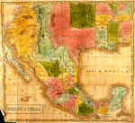

De: La Frikipedia, la enciclopedia extremadamente seria.
De: La Frikipedia, la enciclopedia extremadamente seria. De: La Frikipedia, la enciclopedia extremadamente seria.
| De la serie Países del planeta tierra: | |||||
| California | |||||
|---|---|---|---|---|---|
| |||||
| Lema: Voy saliendo a hacer un casting | |||||
| Himno: Californication
| |||||
| 
Hasta arriba, al noreste (pronto volvera a este país) | |||||
| Capital | Hollywood | ||||
| Mayor ciudad | L.A. | ||||
| Lenguas oficiales | Gringo, Coreano, Vietnamita, inglés de negros y mucho español | ||||
| Gobierno | Republica con Autonomía de Facto | ||||
| Terminaitor | Arnold Schwarzenegger | ||||
| Área | 51000 estudios de TV, 10 estudios de cine, 1000 concesionarios de Porche | ||||
| Población | 10.000 actores multimillonarios y 20.000.000 de actores desempleados. | ||||
| Moneda | Dollar Californanio y Favores sexuales | ||||
| Zona horaria | Horario del Pacifico | ||||
| Dominio Internet | .surf | ||||
| Código telefónico | 90210
| ||||
| centro universal de la televisión como la conocemos, se creen el ombligo del mundo | |||||
California es un lugar mítico para surfers. Queda claro el hecho del misticismo ya que nadie ha vuelto de ahi en un estado lo bastante coherente como para poder servir de fuente de información de alguna calidad. Hay mucho vicio... Una recompilación de los datos básicos explicará porqué es tan facil colocarse en el estado de California.
El lugar fue fundado por unos indios del Imperio Azteca que vendían mate, pero como habia mucho desierto alrededor nadie les iva al chiringo, así que hicieron circular el rumor de que había oro en las montañas, y vino el Imperio Español a conquistar la zona. Las décadas de 1970 a 1980 se vieron arruinadas debido a que en la década de los 60's ya se habian fumado todas las drogas, pero el humo quedó estancado en el aire, ofuscando las nuevas modas y orientaciones sexuales. El advento de la Homosexualidad fue la lógica reacción a las enfermedades venéreas floreciendo en California desde el Flower Power (los hippies comeflores de San Francisco).
Estamos en Silicon Valley, en el desierto pero bastante cerca de San Francisco. Es aquí donde todas las mujeres tenian que refugiarse al conquistar la comunidad Gay la aglomeración de Castro(que no tienen nada que ver con los castreños aunque se supone que Fidel nació allí) en San Francisco. Se quedaron solitas en el desierto, sin hombres y con desconcernantes picores por todo el cuerpo (!)
Desesperadas, todas, por atraer a unos hombres y poder californicar en condiciones (característica que se paso a las mujeres hasta la fecha), las pobrecitas aplicaron hasta el silicio del desierto para rellenar sus tetas y poder mostrar más madera. Motivadas, crearon una nueva moda y lanzaron a su ícono, la encarnación no-tan-carnal de "Plastic Fantastic", Doña Deivid Hasefroch de hacerse vigilante de la playa para poder enfriar sus entrepiernas en las frías aguas del Pacífico californiano al sacarle sangre durante sus famosas prácticas del onanismo solitario. ¿Pero que iba hacer, si no, tomar el riesgo de encontarse, un día, con un Tommy Lee irradiado, en algún callejón oscuro?, en realidad Pamela era una de exclusivas propiedades de Tommy Lee y con un hombre con una picha de ese tamaño es mejor no discutir demasiado...
Algunos hombres finalmente les siguieron la pista a las siliconianas de nueva fabricación, las Vigilantes de Babewatch... El desierto californiano empezó a calentarse, no sólo por los CFCs y los muchos incendios forestales por los pitillos de Clint Eastwood que se trajo consigo a todo el Imperio Yanqui.
Desafortunadamente para las muejres los únicos hombres no Gays en California, por aquel entonces, resultaron ser unos hippies super nerds, notorios frikis: eran los autistas informáticos, vestidos con camisetas de Thinkgeek y calcetines que no se lavaron en 20 años.
Ahí en Silicon Valley nació la ingeniería de sistemas y la electrónica, fruto de unos Frikis cuyo tamaño del pene les inspiró el oportuno invento del Microchip.
Al ver que la lluvia de hombres era algo ácida, las mujeres se suicidaron -o se fueron a Hollywood, que es lo mismo-, y entonces, los frikis quedaron solos en su frikilandia, con la silicona.
Necesitando ahora poder hacerse muchas pajas solitarias, como antes de venir a California, (y pudiendo luego enfriar sus pobres partes en la mencionada agua fría), decidieron construir el Internet como red mundial, para poder intercambiarse imágenes de mujeres -con silicona, recuerdos nostálgicos- mientras vengaban sus penas amorosas con el (pobre inocente) consumidor de la microelectrónica.
Uno tras otro, pactaron con el satánico francés Guillaume Portailles de suministrarles la electrónica para su Windows, ya que si ellos no follaban, ¡nadie más follaría de ahí en adelante! De eso se encargaba la diabólica Hasefroch Corp. con la evolución casi retro de su MS-2 , para rematar todas las ganas y las energías vitales de los usuarios, de una vez y por todas, machacandoles con las Ventanas de su nuevo S/O, apropiadamente llamado Ventanas por aquello de que sus usuarios quisieran tirarse al vacío.
Los mismos frikis de Silicon Valley, mientras tanto, empezaron a beber como cosacos y a tomar LSD, un potente alucinógeno, producto residuo barato de la fabricación de UNIX, una droga que mata lenta pero metódicamente, destrozando a noviazgos y matrimonios, la salud mental y física (de los dedos y los párpados, al no poder casi seguir la velocidad de las rutinas...), etc.
UNIX fue inventado ya en el 1969, junto con los lenguajes B y C, por los frikis muy barbudos, Dennis Ritchie y Dennis Thompson. Uno de ellos probablemente no se llamó ni Dennis, pero eran tan unidos por la investigación en los nuevos chismes de C y UNIX que ni sabían ya distinguir quienes eran.
Las estrellas de su famoso Boulevard son mas baratas que sus prostitutas, por mencionar algunos actores y músicos casi aleatorios: Martin Sheen, Charlie Sheen, Emilio Estevez; así como delincuentes recidivistas inmejorables que también han sido considerados por uno que otro juez: Sylvester Stallone, Brigitte Nielsen, Tommy Lee, Axl Rose, Ike, Cher, James Brown, etc. etc.
Todo friki puede ir ahi y caminar por su famosa Boulevard of broken dreams para añadir sus huellas en el cemento fresco de la acera, pero debemos advertir que al parecer en realidad este sirve para fichar sus huellas dactilares en los libros de la policía local (de esa forma, no dependiente de la informática), la LAPD o Los Antifrikis Pegan Duro
Su actual Goberneitor es sl mismisimo Conan el bárbaro, famoso por decir I'll be back! no defraudó a los millones de espectadores y cumplió.
Ha tocado mas de un culete de becaria de forma inapropiada; en la mejor tradición Clintoniana para conseguir los votos indecisos de entre los Democratas, pero una vez elegido se mostró un fiel Republicano al tratar asi a las libertades civiles de los californianos: Hasta la vista, Baby!
Su acento alemán (austriaco) y el tamaño importante del gran Conan no le ha impedido llegar a ser considerado un hermano gemelo de Danny De Vito (hecho verídico, dedicaron toda una película a este asombroso descubrimiento). Fue esposado al brazo de una prima muy prima de la familia Kennedy (mueren como moscas) en un momento de su casi interminable carrera como The Terminator.
En realidad cuanquier censo es inutil ya que en su mayoría la población morirá en un año con un acto apocaliptico: el Big One...
Para los californianos no hay duda. Vendrá el Big One y no se trata de ningún modelo de furgoneta Dodge. Ni falta hace verificar a Nostradamus, todos los californianos afirman que vendrá la Madre de las terremotos... pronto.
Curiosamente siguen viviendo ahi (!!!), como si no hubiera otro lugar en el mundo, donde ir. Tal vez, para ellos, no lo hay. El sistema de educación estadounidense no es exactamente famoso por su buena enseñanza de geografía (ni otras disciplinas).
Los efectos las drogas de moda en el pervertido estado de California (Unix, Linux, Windows, LSD, Sistemas Operativos, Leche...) llevaron al invento de importanticimas trivialidades tales como:
... bueno, realmente hay solo 1 (los demás son spin-off, segunda generación de éste)
Podria haber sido, hay que usar el pasado del verbo. Ya no se ha visto a Bigfoot desde el inicio de los 1990.
Hoy se ha exportado su subcultura a paises como Italia y Rusia, donde abundan los juankers, jeikers, krakers, freakers de todo tipo. En España casi no los hay, porqué el Internet es demasiado lento y para su mejora se necesita contratar a unos auténticos hackers, aunque para ellos ninguna empresa española puede (1) pagar y (2) entenderlos por no hablar inglés.
Autor(es):